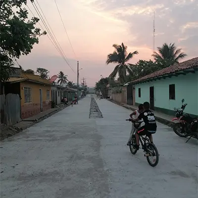
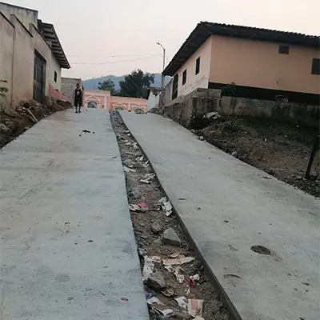

Pavimento Nuevo
Alcaldia de Guayape Olancho sigue avanzando con la pavimentacion de calles nuevas, en esta ocacion le toco al barrio Higuerito
 Sequia por altas temperaturas
El municipio de Guayape vivi sequias como pocos años vividos,manifiestan agricultures del municipio donde tienen miedo sus cosechas se pierdan